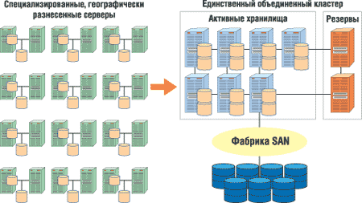
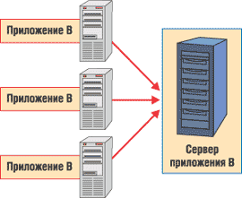
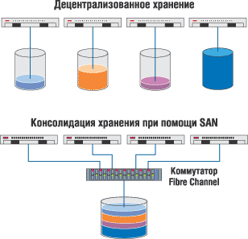

Владислав Шаров
В конкурентной экономике основной задачей лидеров в сфере ИТ и бизнеса становится снижение текущих расходов и упрощение управления ИТ-инфраструктурой. В свою очередь, создание, модернизация и поддержка современной ИТ-инфраструктуры требует серьезного и профессионального стратегического подхода, учета тенденций развития технологий, тщательного анализа и планирования, правильного выбора технических ресурсов, своевременных финансовых вложений. При выборе элементов инфраструктуры ИТ следует учитывать не только класс и масштаб решаемых задач, но и уже существующую инфраструктуру, а также многие другие факторы.
Анализ международного опыта позволяет сегодня говорить о четкой тенденции к консолидации ИТ-ресурсов корпораций. Именно она способна существенно уменьшить затраты на ИТ. Сэкономленные же средства можно направить на повышение качества имеющихся информационных услуг и внедрение новых. Кроме оптимизации расходов на ИТ, консолидация ИТ-ресурсов позволяет улучшить управляемость предприятий за счет более актуальной и полной информации об их функционировании. Обычно говорят о следующих трех типах консолидации (причем все три обычно идут "рука об руку"):
- серверов - перемещение децентрализованных, но конгруэнтных приложений, распределенных на различных серверах компании, в один кластер централизованных гомогенных серверов;
- систем хранения - совместное использование централизованной системы хранения данных несколькими гетерогенными узлами (хостами);
- приложений - размещение нескольких приложений на одном хосте.
Серверные компоненты наиболее критичны для работы предприятия. За выполнение этих компонентов отвечают вычислительные системы и комплексы (сетевые серверы, кластеры серверов) центров обработки данных. Качество решений, касающихся организации корпоративных центров обработки данных, очень сильно влияет на функционирование всей информационной системы. В значительной мере это связано с постоянно повышающимися требованиями к доступности и непрерывности предоставления ИТ-услуг бизнес-подразделениям. Именно поэтому сегодня трудно спорить с тем, что консолидация серверов стала насущной потребностью для бизнеса.
Не секрет, что основные усилия ИТ-администраторов компаний часто направлены на упрощение компьютерной среды предприятия и снижение затрат. Объединение десяти или даже ста серверов в один может в некоторых случаях обеспечить значительные преимущества. При этом само число серверов не может выступать в качестве четкой меры издержек или сложности среды. Жизненно важный фактор в определении общей стоимости оборудования и эффективности серверной среды - это распределение серверов, их использование и управление ими.
По мнению большинства экспертов, чтобы получить максимальный выигрыш от мероприятий по консолидации, компании должны тщательно проанализировать свою инфраструктуру, выделить основные причины ее низкой эффективности и сосредоточиться на проектах, которые позволяют получить наибольшую отдачу от инвестиций. Для этого требуется анализ бизнеса и требований к инфраструктуре для каждого крупного приложения, а также оценка их потенциального вклада для различных уровней консолидации. В частности, это означает необходимость исследования ИТ-процессов с целью повышения общей эксплуатационной эффективности. Консолидация также должна быть сбалансирована относительно потребностей в так называемой распределенной избыточности, предназначенной для поддержки восстановления систем и бизнес-процессов после сбоя оборудования. В долговременной перспективе только всесторонняя и хорошо продуманная стратегия консолидации может обеспечить длительный положительный эффект с точки зрения эффективности бизнеса.
Легко представить себе десяток серверов, обслуживающих одно приложение в десятке различных точек, причем все эти серверы имеют разные конфигурации и требуют локальной поддержки. Понятно, что в такой ситуации эксплуатационные расходы могут стать просто непомерными. Теперь допустим, что рабочая нагрузка этого же приложения выравнена при помощи десятка идентичных серверов, расположенных в одной стойке и управляемых как единое устройство с использованием автоматизированных средств. Такая архитектура может оказаться намного более эффективным, масштабируемым и доступным решением.
Ответ на вопрос - стоит ли объединять этот десяток серверов в один или несколько более крупных - зависит от специфических характеристик приложения, рабочей нагрузки, потребностей бизнеса и ИТ-среды. Да, крупные, вертикально интегрированные серверы хорошо подходят для обслуживания некоторых приложений, но с ними возникают и специфические для такой архитектуры сложности, особенно если на них должны работать несколько приложений с разными характеристиками рабочих нагрузок. Большой сложный сервер создает более "жесткую" среду для работы приложений. Его труднее расширять, обновлять или изменять его конфигурацию. Многие приложения - в силу ограничений, заложенных при их создании, - неспособны воспользоваться преимуществами серверов с числом процессоров более четырех или плохо "уживаются" с другими приложениями, выполняющимися на этом же сервере. К тому же стоимость аппаратного обеспечения в таких системах при сравнимых показателях производительности выше, развертывание сложнее, а добавление средств восстановления системы после сбоя обходится значительно дороже.
Из-за перечисленных выше проблем ИТ-организации стараются более внимательно учитывать все переменные этого уравнения, перед тем как запустить дорогостоящие и потенциально разрушительные проекты консолидации. Настоящей целью должно быть не просто уменьшение общего числа серверов, но оптимизация их числа, распределения и управления ими, что обеспечит наибольшую отдачу от потраченных средств.
Географическая консолидация
В качестве первого шага к консолидации предприятия следует рассмотреть возможность концентрации распределенных серверов в пределах единого центра данных или сравнительно небольшого числа региональных центров (рис. 1). Очевидное преимущество этого решения в том, что упрощается выделение персонала поддержки и его работа по развертыванию и управлению системами, снижается степень дублирования опытных кадров. Централизация также облегчает использование стандартизованных конфигураций и процессов управления, создание рентабельных систем резервного копирования для восстановления данных после сбоя и поддержания связности бизнеса. Упрощается и решение вопросов организации высококачественного контроля за состоянием окружающей среды и обеспечения физической защиты. Может быть улучшена и сетевая безопасность, поскольку серверы оказываются под защитой единого, централизованно управляемого межсетевого экрана.
Как в любых процессах объединения, централизация может стать весьма сложной задачей, затраты на которую, риски и преимущества должны быть тщательно взвешены. Для реализации поставленной цели, как правило, необходимо расширять существующие центры данных или строить новые. Речь также идет о перераспределении ИТ-персонала и возможных затратах на переобучение и наем новых сотрудников.
Вообще говоря, централизация не есть универсальное решение для любого приложения. Дело в том, что требования сети и время отклика приложения могут значительно возрасти, если серверы будут удалены от местоположения пользователей. В этом случае следует тщательно оценить стоимость сетей WAN и степень удовлетворенности пользователей. Служба каталогов и служба регистрации входа пользователей также должны быть интегрированы, однако рабочие нагрузки на системы обеспечения безопасности и аутентификации могут при этом значительно возрасти. Перемещенные серверы и связанная с ними инфраструктура должны быть соответственно модернизированы, чтобы удовлетворять новым требованиям, и эти затраты следует тщательно взвесить при оценке отдачи от капиталовложений в проект консолидации.
|  |
| Рис. 1. Географическая консолидация.
|
Физическая консолидация
Один из этапов консолидации на предприятии состоит в уменьшении общего числа серверов путем объединения компьютеров, работающих под управлением одинаковых ОС и выполняющих одни и те же приложения, в более крупные и мощные системы. Такая консолидация может улучшить использование ресурсов и снизить стоимость затрат на управление. Она также способна повысить эффективность использования иных ресурсов центра данных, таких, как занимаемая площадь и потребляемая мощность.
Однако все эти преимущества следует сопоставить с выгодами упрощенной архитектуры, обеспечивающей выравнивание рабочих нагрузок между несколькими серверами. Разукрупнение обеспечивает высокую готовность при низких затратах за счет избыточности серверов, а также пошаговое масштабирование путем простого добавления серверов.
Инструменты для управления такими кластерными решениями значительно усовершенствовались за прошедшие годы, поэтому высокие операционные затраты не обязательно должны быть их важнейшим отличительным признаком.
В общем случае при физической консолидации специалисты рекомендуют подход, основанный на выборе адекватного размера системы. Это означает укрупнение или разукрупнение системы по мере необходимости для оптимизации инфраструктуры каждого конкретного приложения. В каждом случае следует тщательно проанализировать архитектуру приложения. Многие приложения не рассчитаны на использование более четырех процессоров, а иным для эффективной работы может потребоваться определенный объем памяти или число устройств ввода-вывода. Некоторые приложения могут интенсивно взаимодействовать с другими системами и приложениями в локальных или глобальных сетях.
Потребности бизнеса также должны быть внимательно проанализированы. В частности, представляет интерес число пользователей, которых обслуживает данное приложение, и место их физического нахождения. Кроме того, возникают вопросы специфических требований к производительности, масштабируемости и готовности. Важно также точно определить то место, которое конкретное приложение занимает в бизнес-процессах, и выяснить, каким изменениям во времени оно может подвергнуться.
По понятным причинам оптимизированную архитектуру решения, объединяющую преимущества как укрупнения, так и разукрупнения, можно выбрать на основе тщательной оценки требований конкретных приложений. Проектировщики могут развертывать более крупные индивидуальные серверы для улучшения использования ресурсов, основанные на четких конкретных особенностях поведения приложения и предполагаемых рабочих нагрузках. Разработчики также могут распределять приложение между несколькими серверами, чтобы расширить общую мощность решения за пределы архитектурных ограничений приложения, обеспечить более высокую пропускную способность и повысить готовность решения.
Консолидация приложений
Логическая консолидация приложений приводит к централизации управления критическими для бизнеса системами и приложениями. Преимущества логической консолидации очевидны: в первую очередь это высвобождение аппаратных ресурсов, которые можно использовать на других участках информационной системы. Во-вторых, более простая и логичная структура управления ИТ-инфраструктурой делает ее более гибкой и приспособленной для будущих изменений.
Сценарий гомогенной консолидации предусматривает перенос одного масштабного приложения, ранее выполнявшегося на нескольких серверах, на один, более мощный (рис. 2). В качестве примера такой операции можно привести базы данных, которые зачастую наращивают экстенсивным путем по мере роста объема обрабатываемой информации. Объединение данных и приложений на одном сервере (или кластерной группе) заметно ускоряет процессы обработки и поиска, а также повышает уровень целостности.
Гетерогенная консолидация по содержанию схожа с гомогенной, но в этом случае объединению подлежат разные приложения. Например, несколько экземпляров Exchange Server и SQL Server, ранее запускавшиеся на отдельных компьютерах, могут быть сведены на единой машине. Преимущества гетерогенной консолидации - возрастающая масштабируемость сервисов и более полное задействование системных ресурсов. Однако решение о подобной операции должно приниматься только после тщательного профессионального анализа: не все информационные сервисы безболезненно сосуществуют на одном компьютере, и неправильный подбор объединяемых компонентов может привести не к росту производительности, а к ее падению, т. е. дать негативный экономический эффект. Например, консолидации в принципе не поддаются так называемые Web-фермы, которые оптимизированы именно для горизонтально масштабируемых сред, и их производительность и пропускная способность быстрее растут при горизонтальном расширении, нежели при консолидации.
|  | Рис. 2. Консолидация приложений.
|
Консолидация доменов
Если предприятие вынуждено поддерживать несколько доменов, каждый из которых имеет собственных пользователей и ресурсы, то управление такой инфраструктурой резко усложняется, а многочисленные доверительные отношения делают всю систему громоздкой и плохо подготовленной к изменениям. Консолидация доменов предполагает, например, замену отдельных доменов Windows NT и Windows 2000 на единый домен Windows Server 2003. Главное достоинство консолидации доменов - значительное упрощение административных задач и уменьшение связанных с ними издержек. Кроме того, единый домен более гибок в плане дальнейшего расширения.
Проведенное компанией Meta Group исследование показывает, что компании получают существенные преимущества от консолидации. Так, перед слиянием с HP корпорация Compaq смогла перейти на использование 19 серверов вместо 82, ежегодно уменьшая затраты на эксплуатацию серверов на 1,4 млн долл. Обновив свою ИТ-инфраструктуру, другая компания - Enterasys Networks смогла увеличить консолидацию серверов на 30%, уменьшив стоимость управления системами на 20% и перераспределив 35% персонала ИТ-инфраструктуры. А вот компания Robert Half International в результате консолидации вместо 200 удаленных серверов перешла на использование 41 сервера с централизованным управлением, уменьшив эксплуатационные расходы на 500 тыс. долл. в год.
По мнению одного из экспертов Meta Group, самый большой выигрыш от консолидации при минимальных затратах можно получить путем хорошо продуманного доведения программы консолидации серверов до фазы консолидации систем хранения данных.
Подготовка к консолидации серверовДля консолидации серверов необходимо внимание и планирование каждой фазы проекта консолидации. Успех зависит от следования методологии и приоритетам проекта, которые определяются перед началом фактического развертывания. Процесс обычно состоит из нескольких, охарактеризованных ниже шагов. Оценка текущей инфраструктуры:
Определение целей консолидации серверов:
Создание нового окружения:
Разработка плана миграции:
Внедрение нового пилотного окружения:
Окончательное оформление плана миграции пользователей и данных:
Внедрение новой производственной среды:
Миграция пользователей и данных в новое окружение:
Оценка и обзор проекта:
|
Консолидация данных
Рост объемов данных, расширение спектра задач, связанных с их обработкой, критичность доступа к данным для бизнеса приводят к необходимости именно систем хранения данных. Система хранения - это не просто набор дисков, подключенный к серверу; сегодня это комплекс средств, предоставляющий высокоуровневый доступ к данным, обеспечивающий их постоянную готовность, защиту от сбоев и катастроф, мониторинг и управление использованием дискового пространства, автоматическое архивирование и прозрачное восстановление.
По мнению большинства экспертов, корпоративные системы хранения можно рассматривать как ресурс, стоящий в одном ряду с другими корпоративными ресурсами, такими, как коммуникационная инфраструктура, аппаратные серверы уровня предприятия и прикладные программы. Для эффективного использования любого ресурса желательно, чтобы его можно было консолидировать. Консолидация обеспечивает целый ряд экономических преимуществ, важнейшими из них считаются: экономия на администрировании, возможность перераспределения резервов памяти (резервы, аппаратно локализованные на отдельных серверах, даже при необходимости не удастся использовать в интересах других частей системы), сокращение непроизводительных ИТ-затрат (например, на множество локальных решений для резервного копирования и последующую их эксплуатацию). Кроме того, консолидация памяти открывает путь к сокращению сроков разработки и внедрения систем.
В обычной компании чаще всего есть несколько "островков" хранения данных, реализованных на отдельных машинах, и они, по всей вероятности, подвержены неудержимому росту, свойственному подсистемам хранения данных. Чтобы идти в ногу с требованиями заказчиков и достижениями конкурентов, бизнесу конкретной компании требуются мультиплатформенные, масштабируемые базы данных, способные справиться с интенсивными выборками, их репликацией, ведением журнала и восстановлением данных, которые обычно не получается эффективно реализовать на основе изолированных систем хранения.
Путем объединения данных от нескольких серверов в единую, централизованную и масштабируемую систему хранения данных исключительно высокой готовности можно снизить сложность среды хранения при одновременном повышении скорости обработки данных и их доступности для пользователей. Уровень сервиса также может вырасти при снижении затрат на среду и экономии занимаемой площади.
Понятие консолидации систем хранения данных появилось как исключительно эффективный способ не только организации эффективного хранения данных, но и улучшения работы многих приложений, зависящих от подсистем хранения (обеспечивающий к тому же для этих ресурсов снижение совокупной стоимости владения TCO).
Не секрет, что организация информационных хранилищ стала основным методом, повышающим конкурентоспособность в обработке аналитических и маркетинговых данных, в результате чего в настоящее время информационные хранилища создаются с беспрецедентным размахом. Единственный и самый важный целевой параметр таких центров - обеспечение мгновенного доступа к данным, поскольку сводные таблицы баз данных и индексы занимают намного больше места, чем сами детализированные данные, а более 90% запросов являются многомерными и включают тот или иной уровень агрегирования данных.
Поскольку современные центры данных выполняют весьма ответственные приложения, сегодня допустимое время простоя измеряется секундами, а издержки от простоев включают потерю дохода, упущенные возможности сбыта, снижение производительности труда сотрудников, утрату удовлетворенности и доверия клиентов. Наиболее часто причиной простоя информационного хранилища становятся системы хранения данных: отказ компонентов, длительное время загрузки и сильно растянутые процедуры резервного копирования, которые интерферируют с производственной деятельностью.
Среда современного бизнеса требует круглосуточной работы информационного центра, но эти центры исторически были рассчитаны на низкую загрузку днем и обновление систем по ночам. Однако потребность в доступе к данным в реальном времени диктует применение динамических баз данных, информацию из которых можно быстро извлечь в любое время. Размеры баз данных растут быстро, и их резервирование для обеспечения защиты данных и поддержания их целостности стало еще одной приоритетной проблемой, с которой сегодня сталкиваются системные администраторы.
Если для осуществления бизнеса компания использует Интернет, то у нее должна быть уверенность в доступности и готовности используемых СУБД даже по выходным дням, поскольку кому-то всегда может потребоваться доступ к данным именно в это время. Известно, что обычно размер СУБД удваивается каждый год, и эта проблема со временем станет только острее.
Кластерные базы данныхНедавний прогресс, достигнутый в разработке решений на основе кластерных баз данных, предлагает руководителям ИТ-подразделений более простой и эффективный набор опций для консолидации баз данных. Теперь почти все крупные поставщики баз данных, включая Oracle, IBM и Microsoft, поддерживают кластеризацию больших баз данных в пределах нескольких доступных по цене серверов. Имеются новые средства автоматизации или, по крайней мере, упрощения деления данных, причем некоторые из них даже позволяют выполнять динамическое перераспределение баз данных на основе шаблонов доступа к данным в операционной среде. Современные стандартизованные аппаратные средства межсоединений могут обеспечить довольно широкую полосу пропускания с низкой латентностью, пригодную для коммуникаций и передачи данных между серверами кластеров. Архитектура виртуального интерфейса VIA (Virtual Interface Architecture) открывает дорогу новым типам межсоединений, основанным на высокоскоростных технологиях обмена данными. Они смогут обеспечить еще более высокую масштабируемость и пропускную способность для реализации функций ввода-вывода. Эти технологии в значительной степени улучшили характеристики, распределение ресурсов и совместное использование данных для кластерных решений. Улучшилась и управляемость. Кластер баз данных можно установить и сконфигурировать как единое целое, причем это относится и к управлению им - все функции управления могут быть выполнены всего один раз и автоматически распределены в пределах кластера. Среди преимуществ кластеризации баз данных - более низкая стоимость аппаратного обеспечения, простое развертывание, пошаговое масштабирование и более высокий общий уровень готовности данного решения. Предприятия могут поддерживать большие, консолидированные базы данных без необходимости перехода к вертикально интегрированным серверным платформам - более дорогим и более сложным в развертывании и поддержке. |
Типы консолидации систем хранения
Существует несколько различных методов консолидации, применимых при различных обстоятельствах и удовлетворяющих различным требованиям.
- Объединение систем хранения, размещенных на нескольких серверах, в пределах единого сервера. Эта модель снижает остроту проблем администрирования и экономит занимаемое оборудованием пространство за счет централизации системы хранения на одном мощном сервере.
- Непосредственное подключение нескольких гетерогенных серверов к единой системе хранения данных. Этот подход стал возможен благодаря наличию гетерогенных систем хранения высокого класса, специально разработанных для информационных центров. Они значительно снижают стоимость хранения данных за счет создания единой высокопроизводительной системы хранения для нескольких серверов, устраняя необходимость приобретать отдельные устройства для каждого типа серверов. Этот подход также упрощает администрирование и экономит занимаемую оборудованием площадь.
- Объединение системы хранения на основе архитектуры сетей хранения данных SAN (рис. 3). При таком подходе создается общий пул ресурсов хранения, включая коммутаторы, массивы, библиотеки на магнитных лентах и другие типы накопителей, совместно используемых гетерогенными хостами. Эта модель улучшает эффективность и снижает сложность управления, повышая также масштабируемость, готовность и доступность данных. SAN при подобной консолидации выступает как средство, как технология, позволяющая некоторому числу серверов иметь доступ к единому ресурсу хранения данных.
|  | Рис. 3. Консолидация данных.
|
Роль NAS-устройств с этой точки зрения менее универсальна: дело в том, что они выполняют консолидирующую функцию только для одного класса ресурсов - файловых серверов. Впрочем, не стоит противопоставлять технологии, используемые для создания корпоративной системы хранения, у каждой из них есть свое место. Так, разделение файлов и их предоставление - задача NAS, а работа с СУБД - функция SAN. Обычно они работают вместе. К тому же в последнее время появились продукты, которые позволяют интегрировать эти типы систем.
Централизованные системы хранения данныхРешения на основе архитектуры сетей хранения данных SAN (Storage Area Network) обеспечивают огромные преимущества благодаря снижению эксплуатационных расходов, улучшению использования ресурсов и повышению отзывчивости и доступности инфраструктуры хранения данных. Эти высокопроизводительные системы подключаются к серверной инфраструктуре через высокоскоростные коммутируемые волоконно-оптические сети. Стоимость их развертывания высока, но столь же высока и отдача от инвестиций. Устройства хранения данных, подключаемые к сети NAS (Network Attached Storage), предлагают еще одно решение - для менее ответственных приложений. В средах с распределенными серверами основное узкое место - это емкость жестких дисков. Путем замены локальных дисковых систем на централизованные системы хранения данных ресурсы можно перераспределить за считанные минуты, а вычислительная мощность каждого индивидуального сервера будет задействована более полно. Системы SAN также упрощают и ускоряют резервное копирование данных и процессы восстановления. Локальные ленточные устройства можно заменить на консолидированные устройства, непосредственно подключенные к системе хранения. Серверы, входящие в кластеры, получают доступ к общему хранилищу данных, что упрощает и ускоряет процессы восстановления после сбоя, снижает трафик в сети при репликации данных. И, наконец, централизованное хранение данных улучшает доступ к данным на устройствах хранения в пределах всего предприятия. Это преимущество будет играть все более важную роль по мере продолжения интеграции приложений и систем предприятия и анализа корпоративных данных с целью улучшения принятия решений.
|
Преимущества консолидации
До недавнего времени компаниям обычно приходилось искать компромисс между быстродействием и готовностью данных. Сегодняшние, основанные на сетях технологии хранения данных делают, наконец, консолидацию систем хранения практичной.
Выгоды стратегии консолидации становятся более очевидны, если компания в своем бизнесе использует Интернет. Традиционные методы распределенной системы хранения просто не работают при развертывании электронных инициатив. По мнению большинства экспертов, стратегия консолидированной системы хранения, основанная на современных технологиях, приведет к значительному снижению затрат, улучшению уровня контроля и управления, повышению эффективности и производительности, повышению "подвижности" бизнеса, способности находиться впереди конкурентов и - что, возможно, самое важное - к повышению уровней готовности, надежности и производительности в плане как периода работоспособного состояния, так и пропускной способности. Еще несколько лет назад эти выгоды были недостижимы, но с появлением новейших технологий хранения данных многие компании, уже развернувшие консолидацию, сегодня могут в полной мере воспользоваться ее плодами.
Любой бизнес, независимо от размера компании, может столкнуться с четырьмя крупными неприятностями:
- потеря данных - потеря бизнеса;
- потеря доступа к данным - невозможность ведения бизнеса;
- каждое отдельное узкое место обходится дорого;
- любое нарушение порядка предоставления услуг оборачивается потерями.
Конечно, риск консолидации всех корпоративных данных на единой платформе аналогичен ситуации с укладыванием всех яиц в одну корзину. Однако, если такая корзина никогда не ломается или не отказывает, яйца будут находиться в полной безопасности. Именно поэтому созданная инфраструктура системы хранения обязана не иметь слабых мест, которые могут подвергнуть критичные данные риску. Для устранения всех возможных единых точек отказа все аппаратные компоненты должны быть избыточными (иметь 100%-ное резервирование); все аппаратные компоненты должны удовлетворять спецификациям горячей установки и горячей замены; программно-аппаратные средства (firmware) должны иметь возможность обновления без нарушения работоспособности системы (без необходимости ее перезагрузки или прерывания работы); данные в буферной памяти должны быть полностью защищены от любой вероятной катастрофы. Кроме того, все данные должны быть защищены от искажения, а сам центр - от неожиданных катастроф. Если компания располагает всем этим, то консолидация не будет сопровождаться практически никаким риском.
Итак, чего же можно ожидать от консолидации данных на одной общей платформе для хранения данных:
- емкость системы будет расти быстрее, система станет рентабельнее и управляться будет более эффективно;
- будут устранены узкие места;
- компания увеличит свою эффективность и производительность благодаря непрерывной высокой готовности, что, в свою очередь, увеличит доходность и конкурентоспособность;
- благодаря автоматизации задач управления ИТ-персонал компании будет освобожден для работы над другими проектами, более отвечающими их опыту;
- будет достигнут более высокий уровень эффективности эксплуатации при меньших капиталовложениях.
Другую самостоятельную проблему для рассмотрения представляет производительность. Объединение всех данных на единой платформе означает, что существует вероятность столкновения с большим числом узких мест, если к этому заранее не подготовиться. В частности, запросы при анализе данных в информационном хранилище или совокупности хранилищ требуют очень высокой степени (более 90%) мгновенного, онлайнового, многомерного доступа. Большинство баз данных предлагают одномерные методы с ограниченным доступом к данным, которые не могут полностью удовлетворить запросы анализа данных без полного или частичного сканирования базы данных. За счет этого создается огромное число дисковых операций ввода-вывода, что может существенно снизить производительность.
Поэтому при консолидации систем хранения вероятность низкой производительности - весьма реальный риск. Заказчики, которые намеревались всего лишь избежать проблем простоев, часто заканчивают знакомством с проблемами ограничения полосы ввода-вывода (это на самом деле тоже проблема готовности, но на ином уровне). Рассмотрим эффект часового простоя, вызванного не отказом компонента, а перегрузкой системы. Допустим, корпорация потеряла целый час деловых транзакций (и, что более важно, большинство потенциальных заказчиков, которые пытались получить доступ к Web-сайту во время его бездействия). Вряд ли многие из них повторят свою попытку позже, скорее всего, они просто перейдут на сайт конкурирующей компании. Потери дохода, связанные с такими простоями, непросто оценить; причем чем более загружен сайт, тем значительнее эти потери.
Отсюда следует, что должным образом реализованная платформа консолидации системы хранения данных может обеспечить бизнесу повышение доходности за счет:
- улучшения уровней непрерывной работоспособности;
- сокращения времени восстановления после катастрофического отказа;
- повышения производительности труда;
- снижения сетевого трафика путем уменьшения числа репликаций системы;
- повышения эксплуатационной эффективности;
- снижения затрат на приобретение, профилактику, обслуживание и поддержку;
- снижения общего объема инвестиций, требуемых для выполнения специфических задач;
- повышения удовлетворенности заказчиков и более высокого качества обслуживания.
Ценность данных, которыми оперируют бизнес-приложения, для многих компаний исключительно велика. Стоимость бизнес-информации в большинстве случаев значительно превышает стоимость ИТ-активов (ПО, оборудование, каналы передачи данных). Предприятия испытывают острую необходимость в эффективных, интегрированных решениях для хранения данных. Для воплощения новых электронных инициатив и успешности компании, как правило, потребуется создать соответствующую инфраструктуру с возможностями восстановления после катастрофических разрушений, процедурами резервного копирования и восстановления, а также репликации данных вне центра обработки данных.